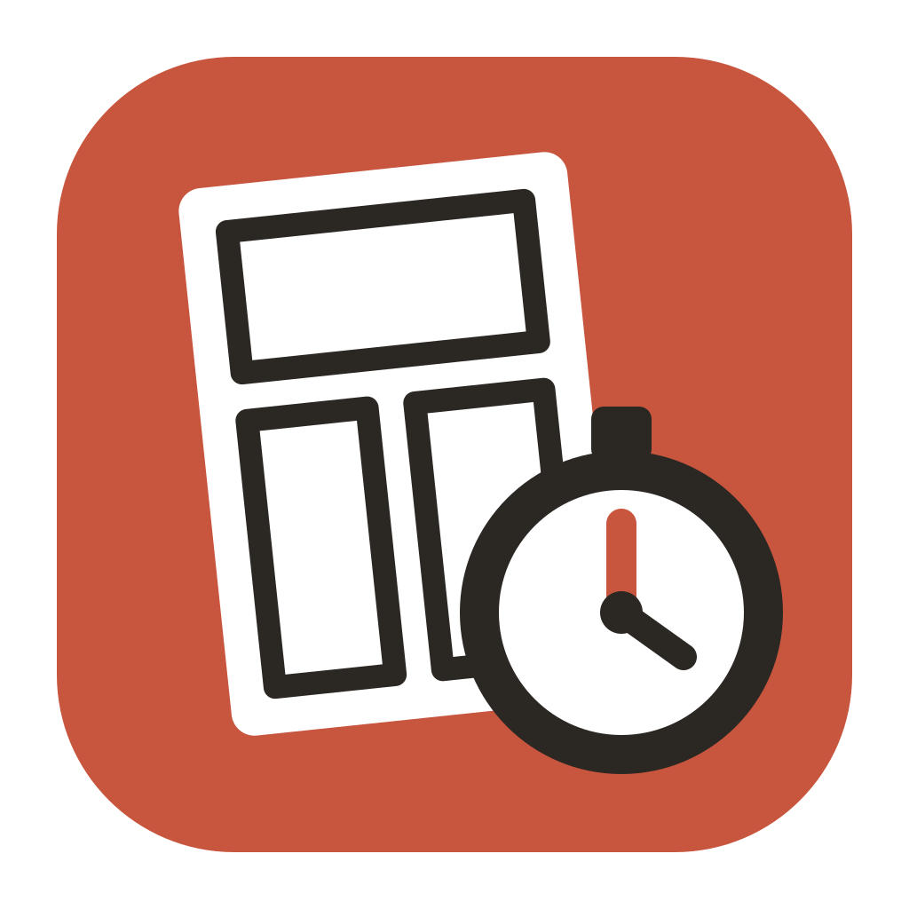

原稿を落とさず描き上げる ── 漫画・イラスト制作のスケジュール管理ソフト ／ はじめにお読みください（2.2.0）
Otosazu は、CLIP STUDIO PAINT のファイルと連動して、ページ（イラストならファイル）× 工程（下書き・ペン入れ・トーンなど）ごとの作業時間を記録するソフトです。 記録がたまるほど「このペースだと何日に完成するか」「締切に間に合わせるには今日なにをどれだけやるか」を正確に出せるようになります。
Otosazu を開き、作品を追加 を押して、作品の種類を選びます。
| 漫画 | CLIP STUDIO の漫画ファイル（.cmc）を選びます。ページの一覧とサムネイルが読み込まれ、CLIP STUDIO でページを増やしたり並べ替えたりしても、作品を開くたびに自動で反映されます。 |
|---|---|
| イラスト | .clip / .psd のファイルを 1 つ以上選びます。依頼の連作や、表紙と挿絵などを 1 つの作品にまとめて締切を管理できます。あとから「＋ ファイルを追加」で増やしたり、ドラッグで並べ替えたりできます。 |
| ファイルなし | ぬいぐるみ・模型・小説など、絵以外の制作に。作品名と、パーツや章の名前（1 行に 1 つ。「12」のように数字だけなら 1〜12 の番号）を入れて登録します。あとから「＋ パーツを追加」で増やしたり、名前をクリックして変えたり、ドラッグで並べ替えたりできます。工程は「設定 → 工程」で自分のセットを作っておきます（下の 7 を参照）。 |
「進捗ボード」には、ページ（縦）× 工程（横）のマス目が並びます。これから作業するマスをクリックすると計測が始まります。 右上のタイマーで一時停止・停止ができ、止めると「この工程は完了しましたか？」と聞かれます。
ページ名（ファイル名）の横の「＋」から、特徴を表すタグを付けられます。タグは完成予測に使われます（例：コマ多 ＝ 1.3 倍かかる見込み）。 漫画なら「コマ多」「資料必要」、イラストなら「規模：大作」「背景：しっかり」「人数：2〜3人」などを用意しています。見開きページには「見開き」タグが自動で付きます。 タグの種類や倍率は「設定 → タグ」で自由に変えられます。 記録がたまると、倍率は実際にかかった時間に合わせて少しずつ自動で調整されます。
| 完成日を見る | 曜日ごとの作業時間（例：平日 3 時間・土日 6 時間）を決めると、「早ければ／おそらく／遅ければ」の 3 つの完成見込み日を出します。 |
|---|---|
| 目標から逆算する | 締切日を入れると、1 日に必要な作業時間と今日のノルマを出し、「ペン入れの日」「混ぜる」など今日の進め方の案を並べます。気分で選んでください（どれを選んでも完成日は変わりません）。 |
時間は「1時間30分」のように表示します。「1:30」や「1.5h」の書き方がよければ、「設定 → 表示」で変えられます。画面の色（ライト／ダーク）も同じところで選べます（はじめはパソコンの設定に合わせます）。
「スケジュール」の「月の予定」タブでは、完成までの作業を日ごとに割り振り、「下書き p9〜p11・ペン入れ p5」のように月のカレンダーで見せます。 1 日の作業量は今日のノルマと同じ考え方で決まります（締切に間に合うなら締切までならし、間に合わなければ作業時間いっぱい）。 何時から作業するかまでは決めません。
| 進め方 | ページごと（p1 を全工程 → p2 を全工程 → …）、工程ごと（全ページの下書き → 全ページのペン入れ → …）、日をまたがないように（1 つのタスクがなるべく 1 日で終わるように選ぶ）から選べます。どれを選んでも完成日はほぼ同じです。 |
|---|---|
| カレンダーに書き出す | Google カレンダーやカレンダー.app などに取り込める .ics ファイルを作ります。1 日 1 件の終日の予定（と締切・完成予定）になり、スマホのカレンダーアプリでも見られます。 |
| 印刷・PDF | 月ごとのカレンダーを A4 横 1 枚ずつ印刷します。PDF にしたいときは、印刷先で「Microsoft Print to PDF」（Mac は「PDF として保存」）を選んでください。 |
取り込み方の例（Google カレンダー）：パソコンのブラウザで Google カレンダーを開き、設定（⚙）→「インポート／エクスポート」で .ics ファイルを選び、取り込み先のカレンダーを選んで「インポート」を押します。 Otosazu 用のカレンダーを作っておき、そこへ取り込むと、ほかの予定と区別しやすくなります。
左の「統計」では、全作品の記録から、予測の前提になっている数字を確かめられます。
工程ははじめ、漫画が「下書き・ペン入れ・トーン」、イラストが「ラフ・線画・塗り・仕上げ」です。 「設定 → 工程」の「漫画」「イラスト」のタブで、ネーム・ベタ・下塗りなどを追加したり、並べ替えたりできます。 追加した工程は、これから登録する作品で使われます。
絵以外の制作には、＋ セットを追加 で自分の工程のセットを作ります。セットの名前（例：ガレージキット）と、作品を区切る 1 つ分の呼び方（例：パーツ、章）を決め、そのセットに工程（例：原型・複製・表面処理・塗装）を足してください。 作品を追加するときの「工程」で「＋ 新しいセットを作る…」を選んでも、この画面に来られます。 「設定 → タグ」では、タグのグループをどのセットで使うかを選べます。
漫画：作品を開くと「漫画ファイルが見つかりません」と表示されます。場所を指定し直す を押して、移動先の漫画ファイル（.cmc）を選んでください
（作品一覧のカードや、進捗ボード右上の「📁 場所を変更」からも指定できます）。
イラスト：見つからないファイルの行に「⚠ 場所を指定」が出るので、押して移動先のファイルを選んでください。
どちらも、これまでの記録はそのまま引き継がれます。
新しい版が出ると、Otosazu を起動したときに「新しい版が出ています」とお知らせします。 更新する を押すと、ダウンロードとインストールが自動で進み、新しい版で開き直します。これまでの記録はそのまま引き継がれます。 お知らせは「設定 → データ → 起動時に新しい版を確認する」で止められます。
確認のとき、Otosazu は配布元（GitHub）から最新の版の情報だけを読み込みます。作業記録などのデータを送ることはありません。
手で入れ替えるとき（1.0.0 から新しい版にするときや、お知らせを止めているとき）は、Otosazu を閉じてから、新しいインストーラーをダブルクリックするだけです。アンインストールは不要です。 Mac では、新しい .dmg から Otosazu をアプリケーションフォルダへドラッグして「置き換える」を選びます。新しい版を初めて開くときは、インストールのときと同じ「このまま開く」の手順がもう一度必要です。